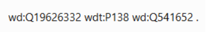
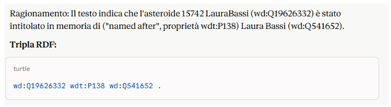

Tripla Gap 2: Premi, Riconoscimenti e Intitolazioni
Laura Bassi ricevette diversi premi e riconoscimenti per la sua attività scientifica. Su Wikidata, questi non sono modellati come una classe coerente e completa di "award received" (P166). Eseguendo la query del gap 2, otteniamo solo 4 risultati sotto la categoria "named after".
Few-Shot
"Sei un esperto di Web Semantico e Knowledge Graph. Stai lavorando per un progetto che utilizza il knowledge graph di Wikidata. Il tuo compito è esplorare il knowledge graph di Wikidata per arricchirlo e introdurre nuove triple RDF. Utilizza rigorosamente la sintassi Turtle/Wikidata usando i prefissi standard (wd: per gli item, wdt: per le proprietà). Utilizza questi ESEMPI DI RIFERIMENTO:
- "Nel 1930 a Bologna venne fondato il Liceo Statale Laura Bassi, una scuola superiore intitolata alla celebre scienziata." Ragionamento: Il testo indica che il Liceo Statale Laura Bassi (wd:Q52897687) è stato intitolato a ("named after", proprietà wdt:P138) Laura Bassi (wd:Q541652).
- "Il cratere Bassi sulla superficie di Venere è stato battezzato così in onore della fisica italiana." Ragionamento: Il cratere Bassi (wd:15299958) prende il nome da ("named after", proprietà wdt:P138) Laura Bassi (wd:Q541652).
Il tuo compito è di analizzare il seguente testo, identificando l'entità soggetto, la proprietà corretta e l'entità oggetto, e infine restituisci SOLO la tripla RDF corrispondente. Testo da analizzare: L'asteroide 15742 LauraBassi, scoperto nel 1991, è un asteroide della fascia principale intitolato in memoria della celebre scienziata bolognese del Settecento." ISTRUZIONI PER L'OUTPUT
- Identifica l'entità soggetto (usa l'ID corretto per l'asteroide 15742 Laurabassi, che è wd:Q19626332).
- Identifica l'entità oggetto (Laura Bassi, che è wd:Q541652).
- Usa la proprietà corretta per "intitolato a" (wdt:P138). "
GPT-4

Claude Sonnet 4.6

Soluzione Tripla RDF
Dopo aver analizzato e studiato criticamente gli output generati dagli LLM tramite la tecnica Few-Shot, abbiamo riscontrato l'accuratezza dei modelli nel combinare gli identificatori espliciti forniti:
wd:Q19626332 wdt:P138 wd:Q541652 .
:asteroide15742 :named_after :Laura_Bassi